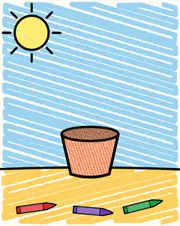
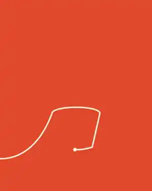
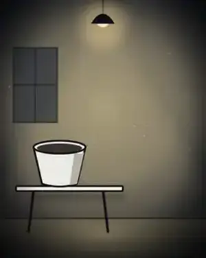
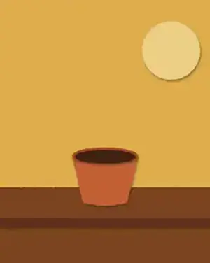
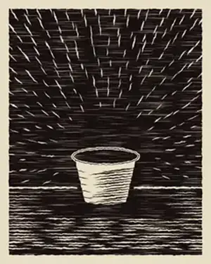
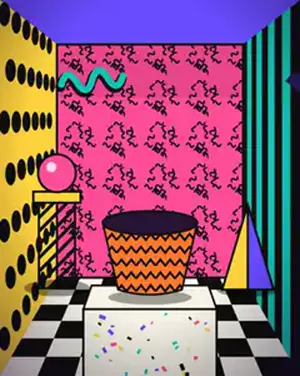
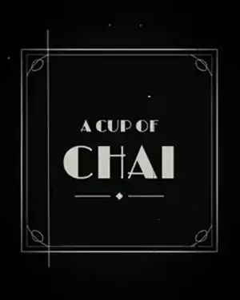
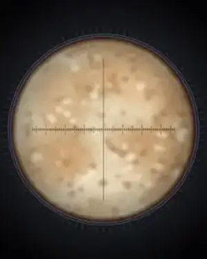
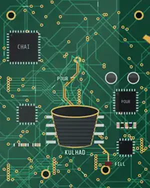

Estilos de vídeo con IA: más de 180 para tus redes
Elige cómo se ve tu vídeo: animación, acuarela, anime, pixel art, papel, pizarra… Nilo Studio IA anima cada escena en el estilo que elijas.
Ejemplos de estilos de animación con IA
Estos son algunos de los estilos que puedes usar. Todos se aplican al vídeo completo: personajes, fondos y transiciones mantienen el mismo aspecto de principio a fin.
























Un estilo por vídeo, o tu propio estilo
Elige un estilo al crear el vídeo o deja que Nilo Studio IA proponga el que mejor encaja con tu tema. Puedes guardar tus favoritos para que tu canal tenga siempre la misma identidad visual.
Lo que más se pregunta.
¿Qué estilos de vídeo con IA tiene Nilo Studio?
Más de 180: entre ellos acuarela, anime, pixel art, claymation, ukiyo-e, pizarra, papel recortado, low poly, art déco y estilos realistas.
¿Puedo usar el mismo estilo en todos mis vídeos?
Sí. Puedes fijar un estilo para tu canal y todos tus vídeos tendrán la misma identidad visual.
¿Los vídeos con IA son verticales?
Sí, en formato 9:16 para TikTok, Reels y Shorts. También puedes crear vídeos largos para YouTube.
Tu idea, hecha vídeo y publicada.
Nilo Studio IA crea, edita, programa y publica tus vídeos verticales desde tu Mac.
Más guías: Crear vídeos con IAAutomatizar y programarAlternativas · Funciones